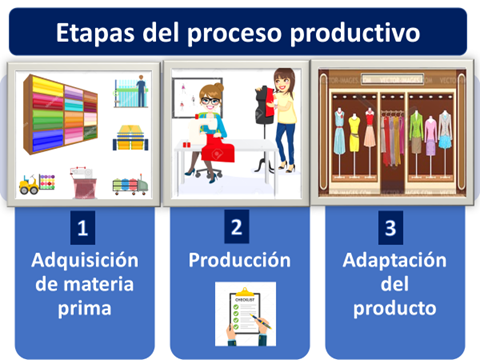
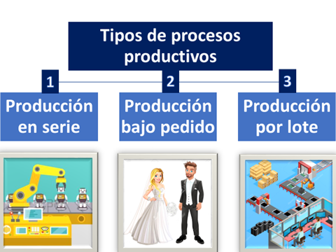

Proceso productivo
El proceso productivo es el conjunto de tareas y procedimientos requeridos que realiza una empresa para efectuar la elaboración de bienes y servicios.
También puede entenderse como una serie de operaciones y procesos necesarios que se realizan de forma planificada y sucesiva para lograr la elaboración de productos.
El proceso productivo es realizado por las empresas, las cuáles se valen de información y tecnología que es utilizada por las personas para la fabricación de los productos.
Además, las empresas desarrollan sus procesos productivos con la finalidad de poder satisfacer la demanda del mercado, que requiere los satisfactores para cubrir necesidades de consumo.
Ideas importantes en todo proceso productivo
En el proceso productivo se debe tomar en cuenta:
- Que toda empresa debe ajustar su proceso productivo a los requerimientos del mercado, puesto que no puede elaborar más productos de los que el mercado requiere, En ese caso, tendría una sobreproducción que le podría afectar sus utilidades.
- Pero tampoco puede producir menos bienes y servicios de los que el mercado solicita, porque dejaría demanda insatisfecha.
Etapas del proceso productivo
El proceso productivo sigue una serie de etapas, las más importantes son:
1. Adquisición de materias primas
Por consiguiente, en esta primera etapa del proceso productivo la empresa reúne todas las materias primas que serán imprescindibles para la fabricación de los productos que ofrecerá al mercado.
Por otro lado, las empresas buscan en esta fase obtener la mayor cantidad de materias primas al menor costo posible, puesto que de esto dependerá si al final puede obtener utilidades o pérdidas empresariales. Todo, suponiendo que todas las materias primas tienen una calidad homogénea.
Luego, en esta etapa la empresa contacta con sus proveedores y escogerá aquellos que les proporciones los mejores precios y la mejor calidad de los insumos.
De la misma forma deberán considerarse los costos del transporte y el almacenaje de los recursos requeridos.
Finalmente, para completar esta fase, es preciso determinar el objetivo de producción, porque de ello dependerá las cantidades correctas de materias primas solicitadas y el equipo necesario para desarrollar eficientemente el proceso productivo.
2. Producción
Ahora, en esta segunda fase se realiza concretamente la transformación de las materias primas e insumos para ser convertidos en productos.
En efecto, es básicamente el proceso de fabricación de los bienes y servicios, por esa razón es indispensable mantener controles estrictos para dar cumplimiento a los estándares de calidad exigidos.
Por lo tanto, del cumplimiento de los requerimientos de calidad, dependerá que los clientes queden o no satisfechos con los productos.
Si los productos entregados al mercado logran satisfacer las exigencias del mercado, la empresa podrá obtener beneficios y utilidades.
Mientras que, si los productos no cumplen con estas exigencias, provocarán grandes problemas a las empresas, desde reclamaciones hasta la pérdida de clientes; y consecuentemente una baja en las ventas y las utilidades de la empresa.
Por eso, esta etapa del proceso productivo es un punto clave para poder hacer correcciones o mejoras dentro de la actividad productiva.
3. Adaptación de producto
Después, se efectúa el proceso de adaptación y adecuación del producto en función del cliente, esta fase del proceso se orienta directamente al proceso de la comercialización de los bienes y servicios.
Claro que es importante tomar en cuenta la logística de almacenamiento, transporte y los elementos intangibles de los servicios en función de la demanda que se presenta dentro del mercado.
En consecuencia, en este paso se puede evaluar si se han cumplido con las metas establecidas por la empresa y de igual forma proceder a realizar las correcciones necesarias, en el caso que se hayan cometido algún de tipo de errores.
Por último, la empresa establecerá los precios con los que serán comercializados los productos elaborados, teniendo en cuenta los costos incurridos durante todo el proceso y considerando un margen utilitario.

Elementos del proceso productivo
Los elementos más importantes que deben considerarse en el proceso productivo son los siguientes:
1. Factores de producción
Los factores de producción son la tierra, el capital y el trabajo que son requeridos para llevar a cabo el proceso de producción.
2. Proceso productivo
El proceso productivo incluye toda la tecnología que se utiliza dentro del proceso y consiste en determinar cómo se efectúa la combinación de los medios humanos y materiales para desarrollar el proceso de producción.
3. Productos
Los productos son todos los bienes y servicios que produce la empresa para el consumo final de los agentes económicos que son los consumidores; o bienes de capital que son usados para la producción de otros satisfactores o la generación de más riqueza productiva.
Tipos de procesos productivos
Los procesos productivos pueden clasificarse de la siguiente manera:
1. Producción en serie
Así que, la producción en serie se realiza cuando se producen productos con características homogéneas, por tanto, son productos estandarizados, no tienen ninguna diferenciación y se producen para el consumo masivo.
Por ejemplo, prendas de vestir con tallas XS, S, M, L y XL. Así como zapatos para hombres número 42, 40, 38, etc.
2. Producción bajo pedido
Por otra parte, la producción bajo pedido se usa para elaborar un producto diferenciado y adaptado a las necesidades específicas de cada cliente.
Podemos ejemplificar el caso de la fabricación de una joya, un traje a la medida, un retrato de una persona, entre otros.
3. Producción por lote
Mientras que, en la producción por lote se hace por un cierto número de productos que recibe el nombre de lote de producción, cuando se concluye un grupo de productos, se procede a producir otro y así sucesivamente.
Cada porción de producción se produce de forma idéntica, pero pueden cambiar las características del producto al producir un lote de producción distinto.

Para concluir, terminamos diciendo que el proceso productivo sigue una serie de etapas que empiezan con la adquisición de la materia prima, continúa con el proceso de su transformación hasta convertirlo en un producto y termina con el proceso de comercialización.
El proceso productivo tiene que tener objetivos precisos y controles estrictos, porque sólo así la empresa puede obtener utilidades, lo más importante es adaptar el proceso productivo a los requerimientos del mercado.
Fuente:
https://economipedia.com/definiciones/proceso-productivo.html